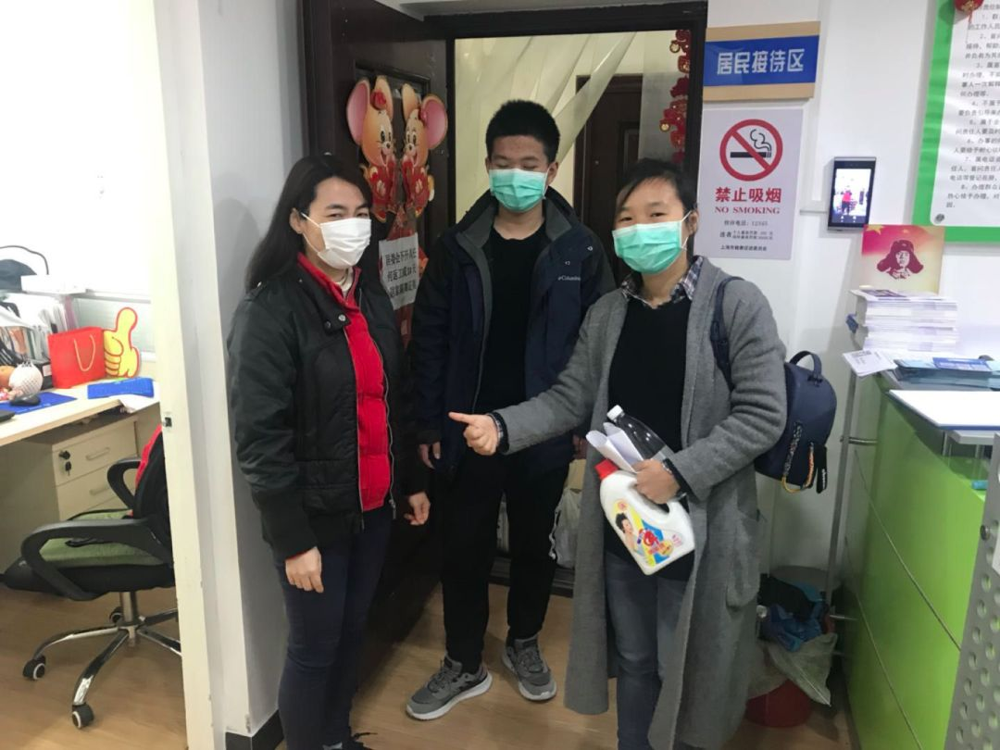
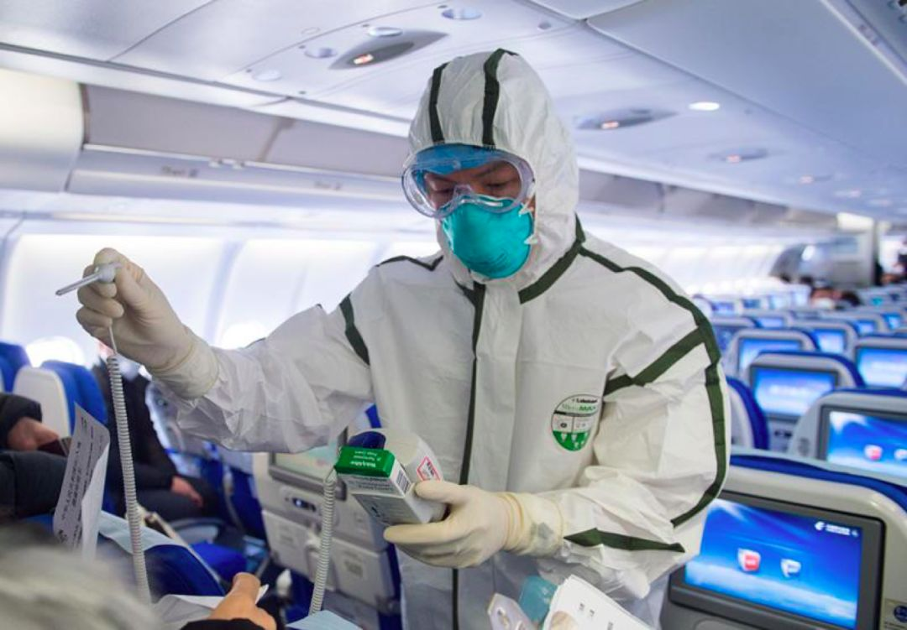
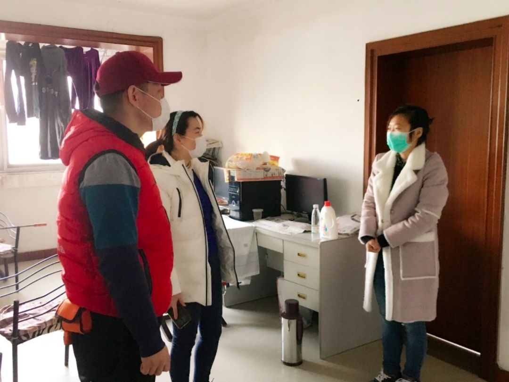

确诊病例连续2天零增长，复工潮中的上海怎样打防疫战？
原文链接 备份链接 2月18日和19日，上海新冠肺炎确诊病例连续2天零增长。对于这个人口超过2400万的超大城市，消息令人振奋。 要帮助基层准确定位重点排查人群，入沪人员全数据的信息收集是重要的第一步。 上海复工的第一天，防控升级， …
“之前你们帮了我这么多，现在换我们一起帮助社区。”
记者 | 应 琛
3月3日，静安区芷江西路街道协和居委会来了两位特殊的居民。他们是刚刚完成了14天集中隔离观察的严小姐和她的外甥小周。
“上海真是一座包容、大气的城市，上海的居委会干部都是我们群众的贴心人！”严小姐真诚地向最近一直默默帮助和鼓励他们的居委会干部表示感谢。
当天临走前，居委会还给了严小姐一些消毒和防疫用品，叮嘱他们做好防疫工作。

严小姐和小周对协和居委会表示感谢
事情还要追溯到2月12日，当天临近午休的时候，协和居委会主任蔡琴接到了一个求助电话。打电话的人是在居委会辖区内的某个小区住了十多年的周先生。因为之前周先生是小区垃圾分类的志愿者，蔡琴和他是比较熟悉的。但电话那头，周先生虽然显得很着急，但说话却又吞吞吐吐。
原来周先生是湖北荆州人，和往年一样，春节前夕就回到了老家和妻儿团聚。当时虽然已经有了一些关于新冠肺炎的报道，但1月21日，小姨子严小姐还是带着儿子小周按计划从武汉出发去往泰国曼谷自由行。
但随着国内疫情的暴发，武汉“封城”，泰国取消了所有飞往武汉的航班，其中也包括他们原定于1月29日的返程航班，严小姐和小周无心再继续游玩，每天待在酒店房间通过电话打听回国的消息。
应外交部的要求，1月31日，民航局派出了两架民航加班航班，由厦门航空执飞，分别从泰国曼谷、马来西亚哥打基纳巴卢运送滞留在当地的湖北籍旅客返回武汉。

资料图：民航局根据国家统一部署派出包机接回滞留泰国的湖北籍游客 摄｜王国安
“严小姐应该也是联系过中国驻泰国大使馆，知道有包机回国一事。但一来她们家在荆州，就算回到武汉，也不一定能回家；二来，武汉当时在她看来并不安全。所以两人没有选择乘坐包机回武汉。”蔡琴告诉《新民周刊》，两人的泰国落地签证二月初也已经到期，后来在当地又延了一次。
一直到2月10日，在曼谷滞留了近20天，由于长时间的焦虑，小周突然出现了发烧的症状。严小姐赶紧带着他前往当地医院就医。后经泰国防疫部门检验，虽然排除了新冠肺炎，但眼看着他们的泰国落地签证又即将到期。
“周先生想到自己在上海有固定居住地，两人或许可以直接回上海。但因为不知道上海具体的规定，也不知道小区让不让非居民进入，听得出来他也是硬着头皮给我打了这个电话。”蔡琴坦言，当时正逢第二轮口罩预约登记工作即将开始，整体防疫工作仍处于压力较大的状态，周先生的请求犹如一个“烫手的山芋”。但她仍然第一时间安抚了周先生的情绪，又将此事汇报给了居委会书记。
“其实中间有过纠结，但最后还是决定尝试着帮助他们。”蔡琴和居民区党总支书记向街道党工委请示,主要领导高度重视,当即向有关部门了解政策和听取意见后，终将可以“回上海”的好消息告诉了周先生，同时又加了严小姐的微信，直接指导他们所需要的材料，“身份证、护照和出入境记录之外，我还让他们开了当地医院的健康证明，以及提供从荆州去武汉的出行记录，如高铁票等等。此外，根据当时上海的防控要求，入沪还只需要在‘健康云’上申报”。
在不确定严小姐和小周的隔离方式前，居委会同时也做好了万全准备，对周先生家小区和楼道进行了全面的消毒，明确了居家隔离志愿者，为两人可能需要的居家隔离进行服务。
蔡琴每天还通过微信和严小姐联系，了解他们的身体状况和行程安排，提醒他们相关的注意事项，告知居委会做好准备，欢迎他们回来，缓解其焦虑情绪。

资料图：浦东机场集中了多数国际航班，上海海关卫生检疫工作人员频频登上航班进行登临检查
2月16日晚11点，严小姐和小周登上了返沪的航班。当飞机于17日凌晨在浦东国际机场降落时，严小姐又按照蔡琴的指导，向海关等部门如实汇报了自己的情况。
“他们后来是在机场就直接被送往了指定的集中隔离点，进行14天隔离。”在集中隔离期间，蔡琴依旧经常发去问候，叮嘱他们安心隔离，隔离结束回家后有任何需求居委都将全力解决。

严小姐向居委会表达了愿意做防疫志愿者的想法
3月3日，解除隔离的二人终于回到家中，放下行李后就立即赶到居委会表达谢意。严小姐表示，小周会在家里上网课，而自己因为单位还未复工，在上海的这段时间愿意来居委会做志愿者，和大家一起共同抗疫。

3月4日，居委会干部上门慰问，要求他们配合物业遵守进出小区的要求，并叮嘱做好个人防护，有困难可以随时找居委会
“之前你们帮了我这么多，现在换我们一起帮助社区。”严小姐说道。

征集令
《新民周刊》现面向全国征集新冠肺炎采访对象和真实故事：
如果你是参与抗击新冠肺炎疫情的医护人员或其家属，我们希望聆听你的“战疫”故事，也希望传达你的诉求。
如果你是确诊、疑似患者本人或家属，我们希望了解你和家人如何“抗疫”的过程，让外界了解你的真实经历。
如果你是疫情严重地区的普通市民，我们希望展现你的乐观，并倾听你所需的帮助。
如果你是公共服务人员或各类捐助者，我们希望看到你的“最美逆行”，记录下你的无私。
如今，各行各业开始陆续有序复工，如何在疫情中有序恢复经济生产，我们希望了解其中的困难，或是暖心故事。
……
抗击新冠肺炎疫情，我们诚征对疫情了解的社会各界人士，提供相关线索，说出你的故事，让我们用新闻留存这一切。
《新民周刊》新冠肺炎线索征集值班编辑联系方式（添加时请简要自我介绍）：
周一：应 琛 微信号：paulineying0127
周二：金 姬 微信号：gepetta
周三：黄 祺 微信号：shewen-2020
周四：周 洁 微信号：asyouasyou
周五：孔冰欣 微信号：kbx875055141
周六：吴 雪 微信号：shyshine1105
周日：姜浩峰 微信号：jianggeladandong
✳如你需要捐赠物资，可与以下两位工作人员联系:王勇：WangYong-SH 吴轶君：rommy150708（添加时请注明“捐物资”，方便工作人员快速通过您的申请，谢谢。）
新闻是历史的底稿，你们是历史的见证者。期待你的故事、你的线索！

▼
大家还都在看这些
▼
新民周刊所有平台稿件， 未经正式授权
一律不得转载、出版、改编或进行
与新民周刊版权相关的其他行为，违者必究


原文链接 备份链接 2月18日和19日，上海新冠肺炎确诊病例连续2天零增长。对于这个人口超过2400万的超大城市，消息令人振奋。 要帮助基层准确定位重点排查人群，入沪人员全数据的信息收集是重要的第一步。 上海复工的第一天，防控升级， …
原文链接 备份链接 温州抗疫的“小目标”在变：1月29日是“奋战十天、拿下拐点”；如今是“力争到3月10日，企业复工率、产能恢复率达100%”。 本文 5464字，阅读全文约8分钟 文| 《财经》记者 王静仪 编辑 | 施智梁 2月初将浙 …
原文链接 备份链接 根据丁香医生实时数据，截至 3 月 3 日 21:32 时，全国现存确诊病例 29930 例，累计确诊病例 80303 例，现存疑似病例 587 例。其中，重症病例 6806 例，死亡病例 2948 例， …
原文链接 备份链接 温州抗疫的“小目标”在变：1月29日是“奋战十天、拿下拐点”；如今是“力争到3月10日，企业复工率、产能恢复率达100%”。 文 | 《财经》记者 王静仪 编辑 | 施智梁 2月初将浙江省温州“小汤山”医院从无到有准 …
原文链接 备份链接 _编者按：这是嘉秋的最后一篇隔离记（前文请看 **[这 …